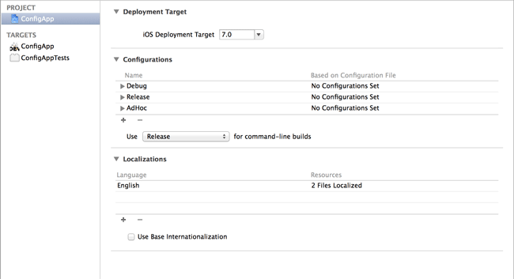
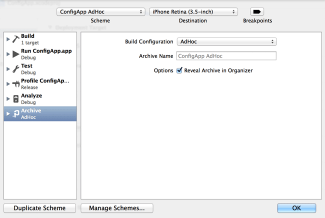
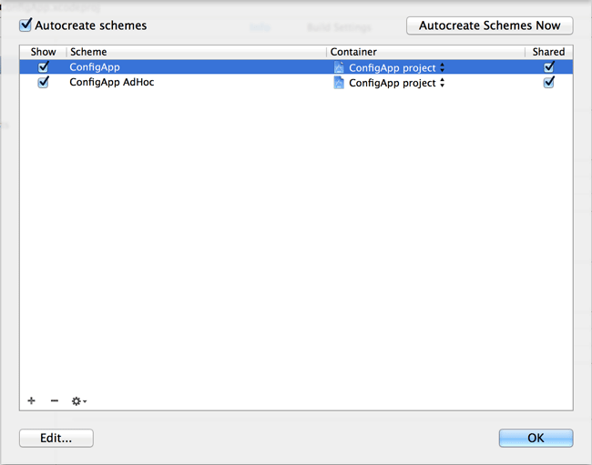
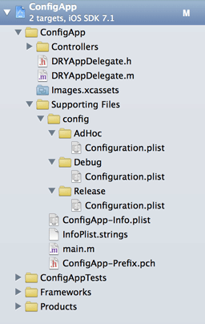
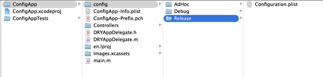
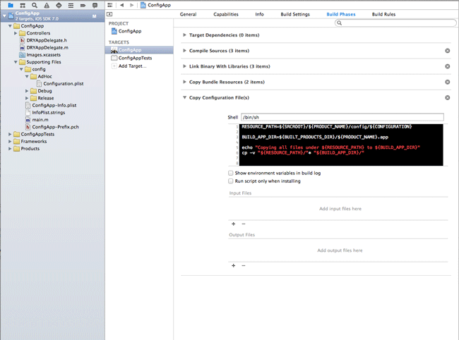
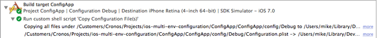

This small example shows how you can set up your XCode projects to configure your apps for multiple deployment environments.
Motivation
When developing apps, you might need different things in different contexts. An example could be different URLs to connect to in AdHoc distribution versus App Store release. XCode provides a very easy to use mechanism to make these things possible: Configurations
The eventual goals are:
- have a separate configuration file for each environment. If we have one or more files per environment, we can for instance change a URL from test server to production server.
- have a different bundle identifier, bundle name and app icon for each environment. Doing this makes sure you can directly identify which version is installed on a device. Maybe more important, it also allows us to have multiple versions on the device, since each environment has its own bundle identifier.
- have a preprocessor macro to be able to activate code depending on the environment. This might come in handy when you need to activate code in one environment, but leave it out in another. For instance logging in development releases, but avoiding those logs in AdHoc and App Store releases.
Adding configurations to your XCode projects
As you may or may not know, when you create a new project, Xcode already provides two configurations out of the box: Debug and Release
The nice thing about these configurations is that you can change a build setting depending on the active configuration. You can also get a hold on the active configuration within you custom build scripts and custom build settings. With these techniques we will enhance our project settings. Our example project on GitHub is the result of such a setup. In the remainder of this document, we will guide you through how we made this happen.
We have added an extra configuration. We named it AdHoc and it's meant to indicate a build meant for AdHoc distribution.
To add a configuration, you need to select your project in XCode (the root in the Project Navigator). Then go to the project and locate the Configurations section under the Info tab. In the Editor menu, select Add Configuration and then select Duplicate "Release" Configuration. That's it! You've just added a new configuration.
To add a configuration you can also just click on the + button under the existing configurations.

To be able to activate your new configuration, you will need to tell XCode to use it within a build scheme.
Setting a configuration in a build scheme
We will create a new scheme to be able to release AdHoc specific builds. To do this, go to Product in the menu. Then select Scheme and Manage Schemes...
Select your current application building scheme, click the little cogwheel in the lower left corner and select Duplicate
The application building scheme has the same name as your project by default
In the newly opened dialog, change the name of the scheme to something like YourAppName AdHoc. Then select the Archive option and set the Configuration to AdHoc. Confirm by clicking the OK button.

If you are working together with other people on the project, they won't see your new scheme, because you didn't share it yet. Go ahead and share both the original and newly created scheme by checking the checkboxes in the column Shared. If you commit your work to your favourite source control management system, others will be able to use these schemes.

Setting up different configuration values per environment
We now have a fully configured project to support different configurations per environment, let's put it to good use. We will first create a folder structure within our project and put a configuration file in each of those folders. Next, we will add an extra build phase to the project to make sure the correct file is used when running the app.
Let's first create a "config" group under the "Supporting Files" group.
This is a suggestion to keep your project clean. The only thing that will eventually matter is the location of the files on disk.
After you created the config group, create 3 groups under it with the same name as your configurations. In our case this is Debug, AdHoc and Release. Under each configuration group, create a Property List file.

Make sure you save the file within the following structure:
<source root folder>/config/<configuration>/Configuration.plistThe source root folder is the folder that sits on the same level as your .xcodeproj file. It normally has the name of your project and it normally has your AppDelegate in it. The configuration folder must match the name of your different configurations. These are obviously case sensitive.
You can manually create the necessary folders and files and then add them to Xcode as well.

To make sure we only use the correct configuration per environment, let's remove the just added files from the application target. There are different ways of doing this:
you can select the file in the Project Navigator and uncheck the checkbox under Target Memebership in the File Inspector
you can select your target in the project root, then select Build Phases and then remove the files under the Copy Bundle Resources section.
you can directly remove the files from the target when you create or add them to Xcode by unchecking the relevant checkbox
The final step is to actually copy the correct configuration file to the application bundle when being built. To do this, go to your project root and select your target. Now select the Build Phases tab. The next thing we need to do is add a build phase. Since Xcode 5 you need to this from the menu. So go ahead and select Editor in the menu, and then select Add Build Phase and select Add Run Script Build Phase. A new phase will be added to the existing phases. Let's rename it to something like Copy Configuration File(s). If you have structured your configuration files as we suggested, you can now paste the following section in the black script box:
RESOURCE_PATH=${SRCROOT}/${PRODUCT_NAME}/config/${CONFIGURATION}
BUILD_APP_DIR=${BUILT_PRODUCTS_DIR}/${PRODUCT_NAME}.app
echo "Copying all files under ${RESOURCE_PATH} to ${BUILD_APP_DIR}"
cp -v "${RESOURCE_PATH}/"* "${BUILD_APP_DIR}/"
This script will copy all files under your specific configuration folder to the build application bundle folder. It is important to keep the Copy Bundle Resources and the just added phase together in this order.
Go ahead and build your project, then check the build output. You should see the echo message and the list of copied files being printed out.

Using the configured values
To use the configuration file in this example, the process is a matter of using the NSBundle class. More specifically, you just need to get the file path of you configuration file(s) from the application's main bundle. The next example shows you how to do this.
- (NSString *) readValueFromConfigurationFile {
NSBundle *bundle = [NSBundle mainBundle];
NSString *path = [bundle pathForResource:@"Configuration" ofType:@"plist"];
NSDictionary *config = [NSDictionary dictionaryWithContentsOfFile:path];
return config[@"configParameter"];
}The code snippet above is taken from the provided example project. Check out the DRYShowConfigurationViewController
Remember that you can also read your application info.plist file. Especially handy for showing information in an about screen or such.
NSDictionary *infoDictionary = [[NSBundle mainBundle] infoDictionary];
NSString *bundleId = infoDictionary[@"CFBundleIdentifier"];
NSString *bundleVersion = infoDictionary[@"CFBundleVersion"];Releasing/Building different versions of your app
While having your configuration separated per environment is nice, what is really helpful is to have multiple versions on your devices at the same time. For instance, it is handy to have your app installed from the AppStore, the nightly released AdHoc distribution and your latest development version next to each other. Especially when it comes to reproducing bugs, this is a welcome setup.
Since having the same App ID for each environment results in overwriting the currently installed app, we will need a different App ID per environment. This is where User-Defined settings come in.
Let's first create a user defined setting. To do this, go to your target's build settings once again. Now to add a user defined setting, open the Editor menu, select the Add Build Setting and select Add User-Defined Setting. Now rename the newly created setting to something like CustomAppBundleId. Now open the new setting to reveal the different configuration profiles. This is where we will set the different values for our different environments.
Set the different configurations to something like this:
//AdHoc
com.yourcompany.${PRODUCT_NAME:rfc1034identifier}.${CONFIGURATION}
//Debug
com.yourcompany.${PRODUCT_NAME:rfc1034identifier}.${CONFIGURATION}
//Release
com.yourcompany.${PRODUCT_NAME:rfc1034identifier}Xcode will resolve the used variables right away and show you the actual values in real time. As you can see, we use a configuration suffix for both Debug and AdHoc releases, but not for Release.
We still need to set this user setting as bundle id. You do this in your application's info.plist file, typically named after your product like so: YourProductName-Info.plist. By default it resides under the Supporting Files group. Go ahead and open up the file. Now locate the Bundle identifier key and change its value to your user defined setting: ${CustomAppBundleId}
With this setup, you will now be able to install multiple versions of your app next to each other. Since all versions still have the same name and icon, it will however be difficult to distinguish one version from the other. Let's continue our quest for epic awesomeness and change the name and icon for our different environments.
Giving each environment app version its proper name
The first step to enable a specific name per environment is again adding a User-Defined setting. So go ahead and create a new user defined setting. Call it for instance CustomProductName. Now for each configuration, set a specific name. In our example app we did the following:
//AdHoc
ConApp AH
//Debug
ConApp DE
//Release
${PRODUCT_NAME}As you can see, we use the product name for Release and use custom values for the other two. Again, go to your info.plist file. This time, locate the Bundle name and Bundle display name keys. Change both these values to ${CustomProductName}
If you run the app in the simulator and check the springboard, you'll see your custom development app name appear. Let's change the icon per environment as well.
Giving each environment app version its proper icon
To give each environment its own icon, we will use the asset catalog which is created by default for each new project. Xcode places the Images.xcassets under the app group by default. Have a look inside, you should see an AppIcon set and a LaunchImage set.
We assume you use Xcode 5+. Older Xcode versions did not have the asset system yet. If you are still on an older version of Xcode, you can change the app icon per environment using your project's info.plist file. Look for the Icon files key.
We will need two extra App Icon sets. So in the Editor menu, click New App Icon. Rename the newly created set to AppIcon-Debug and drag & drop your debug specific icons in the correct placeholders. Repeat this step, but this time call the set AppIcon-AdHoc and place your ad-hoc specific icons in the correct placeholders. The last step is to just rename the default create app icon set to AppIcon-Release. If not already set, again drag and drop the appropriate icon files inside this set.
Find more info on assets here
Now that we have put all icons in place, we will need to tell Xcode to use the appropriate set. Open your target's Build Settings and locate the Asset Catalog Icon Set Name under the Asset Catalog Compiler - Options section. Now for each configuration, if you followed our App Icon set naming convention, set each value to:
AppIcon-${CONFIGURATION}
That should do the trick. Your app is now completely set up to use the advantages of the different configurations. The only thing you need to do is test it. Run the app within XCode to see the Debug configuration. Create an archive while the AdHoc scheme is active to create an ad-hoc distribution. Deploy it on a provisioned device to see the AdHoc setup at play. Finally, create an archive with the regular scheme activated to make the Release configuration work. Enjoy!
Instead of deploying the app, you can also just check the organizer after building the respective archives. Normally, the archives open up after building an archive. If not, you can open the organizer via the Window menu. If everything is configured correctly, the bundle (display) name, identifier and app icon are shown here as well.
Bonus: feature-switching with macros
To enable certain pieces of code depending on the current environment, you can use Preprocessor Macros. As you might already now or could have guessed, you can setup these macros in you target's Build Settings. Open your build settings and locate the Preprocessor Macros within the Apple LLVM 5.0 - Preprocessing section. For each configuration add the following:
CONFIGURATION_${CONFIGURATION}
After doing this, you can use the macro in your code to detect which environment is currently active like so:
#if defined (CONFIGURATION_AdHoc) || defined (CONFIGURATION_Debug)
//Code placed here will only be compiled and thus
//included at runtime in AdHoc and Debug releases.
#endifReferences and credits
Some resources that helped us create this example project: